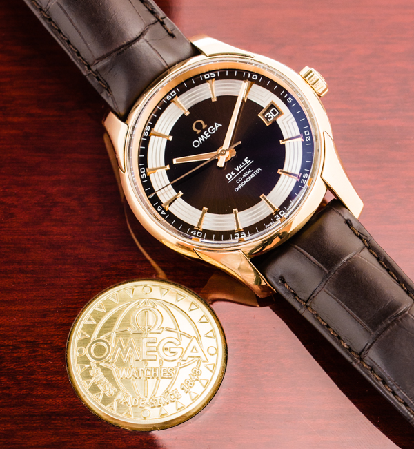

Het DeVille-idee wordt in 1960 geïntroduceerd, maar niet als een zelfstandig onderdeel, zelfs niet onder de naam. Het duurt tot 1963 voordat de handtekening van DeVille voor het eerst op een Omega-wijzerplaat verschijnt[5]. En uiteindelijk wordt de DeVille in 1967 een eigen collectie, een eigen pagina in de Omega-catalogus.

- Specificaties
- Prijs: $3.917
- Opwinden: Handopwind
- Bouwjaar: 1997
- Referentienummer: 3570.50.00
- Hoogte: 13.8mm
- Waterdicht:5 ATM
- Glas: Kuntstof
- Diameter: 42mm